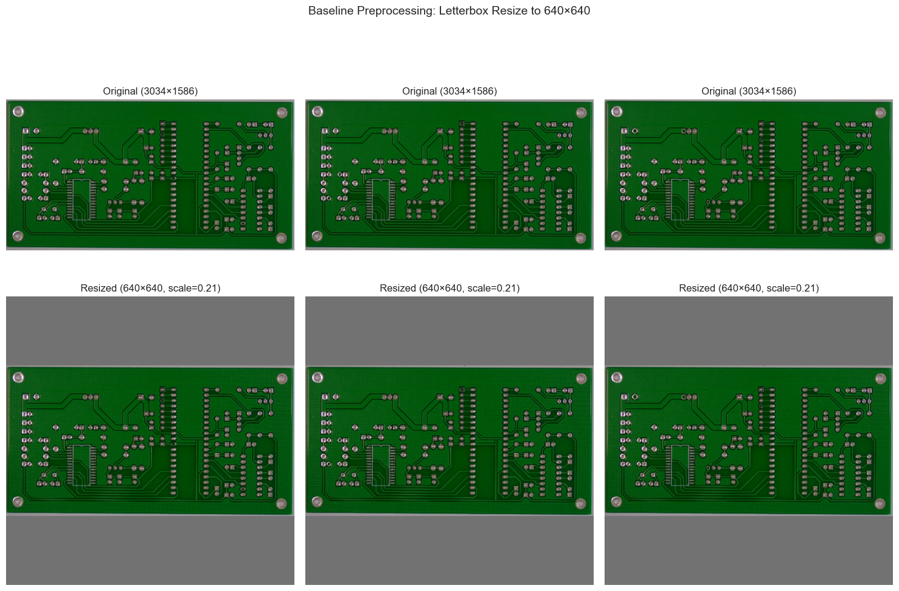
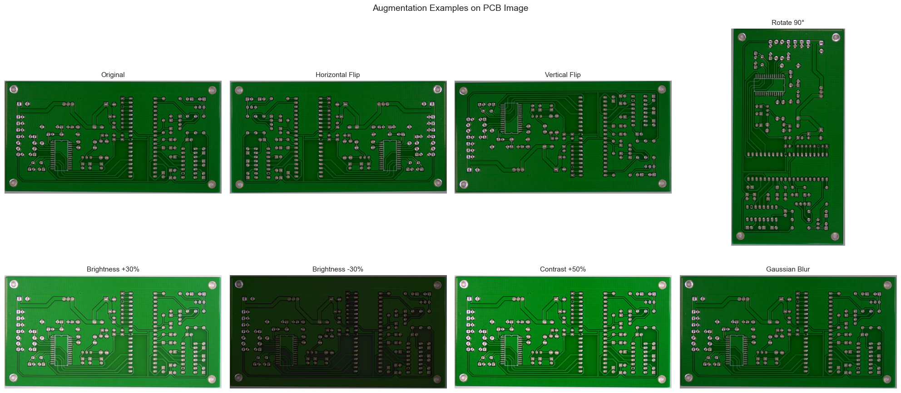
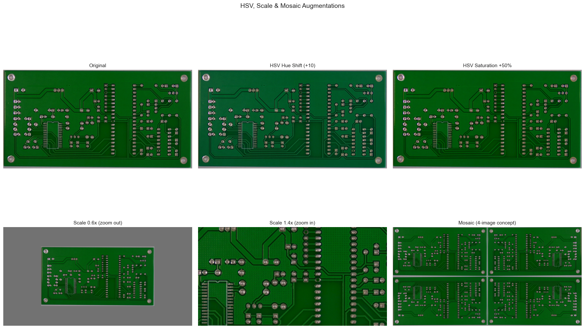
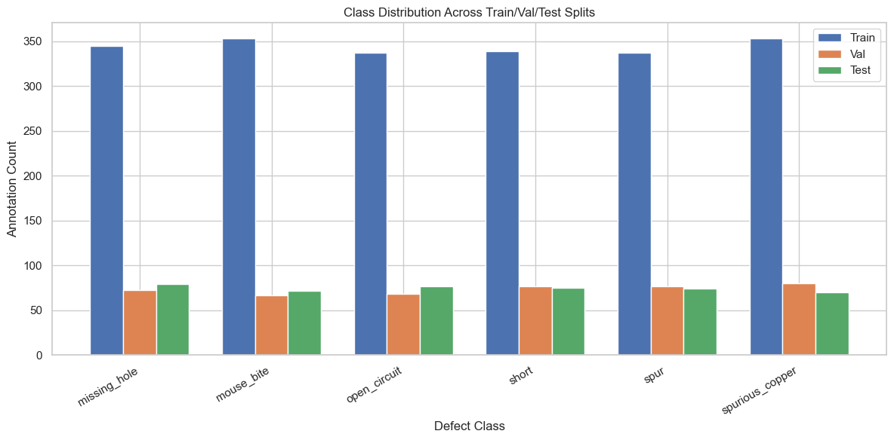

Notebook 02: Preprocessing & Augmentation#
This notebook documents the preprocessing and augmentation pipeline applied to the PCB defect detection dataset. We cover:
Baseline preprocessing — resize to 640×640 (YOLOv8 input), normalization
Augmentation pipeline — rotation, flipping, brightness/contrast, mosaic
Class imbalance analysis — identify underrepresented classes
Visual examples — before/after augmentation comparisons
Key insight: YOLOv8 (Ultralytics) handles most augmentation natively during training via its train() config. This notebook documents which augmentations are applied and why they are appropriate for PCB defect images.
import os
from pathlib import Path
from collections import Counter
import numpy as np
import pandas as pd
import matplotlib.pyplot as plt
import matplotlib.patches as patches
import seaborn as sns
import cv2
from PIL import Image
sns.set_theme(style="whitegrid")
# Paths
PROJECT_ROOT = Path(".").resolve().parent
DATA_DIR = PROJECT_ROOT / "data"
YOLO_DIR = DATA_DIR / "pcb-yolo"
CLASS_NAMES = {
0: "missing_hole", 1: "mouse_bite", 2: "open_circuit",
3: "short", 4: "spur", 5: "spurious_copper",
}
print(f"YOLO dataset: {YOLO_DIR}")
for split in ["train", "val", "test"]:
n = len(list((YOLO_DIR / "images" / split).glob("*")))
print(f" {split}: {n} images")
YOLO dataset: /Users/mattmiller/Documents/Northwestern/Computer Vision/Notebooks/Final Project/data/pcb-yolo
train: 485 images
val: 104 images
test: 104 images
1. Baseline Preprocessing#
YOLOv8 expects input images resized to 640×640 pixels. During training, Ultralytics handles this automatically via the imgsz parameter. Here we visualize what this resize looks like and discuss normalization.
Why 640×640? It’s the default YOLOv8 input resolution — a balance between detail preservation and GPU memory. Since PCB defects can be small, this resolution captures sufficient detail for most defect types.
# Demonstrate resize to 640x640 with letterboxing (YOLO-style)
def letterbox_resize(img, target_size=640):
"""Resize image with letterboxing to preserve aspect ratio (YOLO-style)."""
h, w = img.shape[:2]
scale = min(target_size / w, target_size / h)
new_w, new_h = int(w * scale), int(h * scale)
resized = cv2.resize(img, (new_w, new_h), interpolation=cv2.INTER_LINEAR)
# Create canvas and center the image
canvas = np.full((target_size, target_size, 3), 114, dtype=np.uint8) # gray padding
dx = (target_size - new_w) // 2
dy = (target_size - new_h) // 2
canvas[dy:dy+new_h, dx:dx+new_w] = resized
return canvas, scale, dx, dy
# Show original vs resized for 3 sample images
train_images = sorted((YOLO_DIR / "images" / "train").glob("*"))[:3]
if train_images:
fig, axes = plt.subplots(2, 3, figsize=(15, 10))
for i, img_path in enumerate(train_images):
img = cv2.imread(str(img_path))
img_rgb = cv2.cvtColor(img, cv2.COLOR_BGR2RGB)
resized, scale, dx, dy = letterbox_resize(img_rgb)
axes[0, i].imshow(img_rgb)
axes[0, i].set_title(f"Original ({img_rgb.shape[1]}×{img_rgb.shape[0]})")
axes[0, i].axis("off")
axes[1, i].imshow(resized)
axes[1, i].set_title(f"Resized (640×640, scale={scale:.2f})")
axes[1, i].axis("off")
plt.suptitle("Baseline Preprocessing: Letterbox Resize to 640×640", fontsize=14)
plt.tight_layout()
plt.show()
else:
print("No training images found — run Notebook 01 first")

Pixel Normalization#
In addition to resizing, YOLOv8 normalizes pixel values from [0, 255] to [0.0, 1.0] by dividing by 255. This normalization happens internally during model.train() and model.predict() — you do not need to do it manually. Ultralytics applies this automatically in its data loading pipeline.
For ResNet (Notebook 04), we use the standard ImageNet normalization: mean=[0.485, 0.456, 0.406], std=[0.229, 0.224, 0.225] via torchvision.transforms.Normalize.
2. Augmentation Pipeline#
We use a combination of Ultralytics-native augmentations (applied automatically during model.train()) and document additional augmentations that could be applied with Albumentations.
YOLO-Native Augmentations (via model.train() config)#
Augmentation |
Parameter |
Default |
Purpose for PCB |
|---|---|---|---|
Mosaic |
|
On |
Combines 4 images — helps with small defect detection |
Horizontal Flip |
|
50% |
PCB orientation is arbitrary |
Vertical Flip |
|
Off → 50% |
Enable — PCBs have no “up” |
HSV Hue |
|
On |
Minor color variation |
HSV Saturation |
|
On |
Lighting condition variation |
HSV Value |
|
On |
Brightness variation |
Scale |
|
On |
Multi-scale defect detection |
Translation |
|
On |
Positional robustness |
Rotation |
|
Off → On |
Enable — PCBs can be rotated |
Custom Augmentations (demonstration below)#
We also demonstrate manual augmentations to show understanding of their impact on PCB images.
# Demonstrate individual augmentations on a sample PCB image
def apply_augmentations(img):
"""Apply individual augmentations and return labeled results."""
results = [("Original", img.copy())]
# Horizontal flip
results.append(("Horizontal Flip", cv2.flip(img, 1)))
# Vertical flip
results.append(("Vertical Flip", cv2.flip(img, 0)))
# 90° rotation
results.append(("Rotate 90°", cv2.rotate(img, cv2.ROTATE_90_CLOCKWISE)))
# Brightness increase
bright = cv2.convertScaleAbs(img, alpha=1.3, beta=30)
results.append(("Brightness +30%", bright))
# Brightness decrease
dark = cv2.convertScaleAbs(img, alpha=0.7, beta=-20)
results.append(("Brightness -30%", dark))
# Contrast enhancement
contrast = cv2.convertScaleAbs(img, alpha=1.5, beta=0)
results.append(("Contrast +50%", contrast))
# Gaussian blur (simulates slight defocus)
blurred = cv2.GaussianBlur(img, (5, 5), 0)
results.append(("Gaussian Blur", blurred))
return results
# Apply to a sample training image
if train_images:
sample_img = cv2.imread(str(train_images[0]))
sample_rgb = cv2.cvtColor(sample_img, cv2.COLOR_BGR2RGB)
augmented = apply_augmentations(sample_rgb)
fig, axes = plt.subplots(2, 4, figsize=(20, 10))
for ax, (name, aug_img) in zip(axes.flat, augmented):
ax.imshow(aug_img)
ax.set_title(name, fontsize=11)
ax.axis("off")
plt.suptitle("Augmentation Examples on PCB Image", fontsize=14)
plt.tight_layout()
plt.show()
else:
print("No training images found")

# Demonstrate HSV and scale augmentations (YOLO-native)
if train_images:
sample_img = cv2.imread(str(train_images[0]))
sample_rgb = cv2.cvtColor(sample_img, cv2.COLOR_BGR2RGB)
h_img, w_img = sample_rgb.shape[:2]
fig, axes = plt.subplots(2, 3, figsize=(18, 12))
# Original
axes[0, 0].imshow(sample_rgb)
axes[0, 0].set_title("Original", fontsize=11)
# HSV Hue shift
hsv = cv2.cvtColor(sample_img, cv2.COLOR_BGR2HSV).astype(np.float32)
hsv[:, :, 0] = (hsv[:, :, 0] + 10) % 180 # hue shift
hue_shifted = cv2.cvtColor(hsv.astype(np.uint8), cv2.COLOR_HSV2RGB)
axes[0, 1].imshow(hue_shifted)
axes[0, 1].set_title("HSV Hue Shift (+10)", fontsize=11)
# HSV Saturation change
hsv2 = cv2.cvtColor(sample_img, cv2.COLOR_BGR2HSV).astype(np.float32)
hsv2[:, :, 1] = np.clip(hsv2[:, :, 1] * 1.5, 0, 255)
sat_boost = cv2.cvtColor(hsv2.astype(np.uint8), cv2.COLOR_HSV2RGB)
axes[0, 2].imshow(sat_boost)
axes[0, 2].set_title("HSV Saturation +50%", fontsize=11)
# Scale down (zoom out)
scale_factor = 0.6
new_h, new_w = int(h_img * scale_factor), int(w_img * scale_factor)
scaled = cv2.resize(sample_rgb, (new_w, new_h))
canvas = np.full_like(sample_rgb, 114)
dy, dx = (h_img - new_h) // 2, (w_img - new_w) // 2
canvas[dy:dy+new_h, dx:dx+new_w] = scaled
axes[1, 0].imshow(canvas)
axes[1, 0].set_title("Scale 0.6x (zoom out)", fontsize=11)
# Scale up (zoom in / crop center)
crop_h, crop_w = int(h_img * 0.6), int(w_img * 0.6)
cy, cx = h_img // 2, w_img // 2
cropped = sample_rgb[cy - crop_h//2:cy + crop_h//2, cx - crop_w//2:cx + crop_w//2]
zoomed = cv2.resize(cropped, (w_img, h_img))
axes[1, 1].imshow(zoomed)
axes[1, 1].set_title("Scale 1.4x (zoom in)", fontsize=11)
# Mosaic concept illustration (4-image grid)
quad = cv2.resize(sample_rgb, (w_img // 2, h_img // 2))
mosaic = np.full_like(sample_rgb, 114)
mosaic[:h_img//2, :w_img//2] = quad
mosaic[:h_img//2, w_img//2:w_img//2 + quad.shape[1]] = cv2.flip(quad, 1)
mosaic[h_img//2:h_img//2 + quad.shape[0], :w_img//2] = cv2.flip(quad, 0)
mosaic[h_img//2:h_img//2 + quad.shape[0], w_img//2:w_img//2 + quad.shape[1]] = cv2.flip(quad, -1)
axes[1, 2].imshow(mosaic)
axes[1, 2].set_title("Mosaic (4-image concept)", fontsize=11)
for ax in axes.flat:
ax.axis("off")
plt.suptitle("HSV, Scale & Mosaic Augmentations", fontsize=14)
plt.tight_layout()
plt.show()
else:
print("No training images found")

3. Class Imbalance Analysis#
Class imbalance affects model performance — the model may learn to predict majority classes more often. Let’s analyze the training set distribution and discuss strategies.
# Analyze class distribution in train/val/test splits
split_class_counts = {}
for split in ["train", "val", "test"]:
label_dir = YOLO_DIR / "labels" / split
class_counter = Counter()
for label_file in label_dir.glob("*.txt"):
with open(label_file, "r") as f:
for line in f:
parts = line.strip().split()
if len(parts) == 5:
class_counter[int(parts[0])] += 1
split_class_counts[split] = class_counter
# Grouped bar chart
fig, ax = plt.subplots(figsize=(12, 6))
x = np.arange(6)
width = 0.25
for i, (split, counts) in enumerate(split_class_counts.items()):
values = [counts.get(c, 0) for c in range(6)]
ax.bar(x + i * width, values, width, label=split.capitalize())
ax.set_xlabel("Defect Class")
ax.set_ylabel("Annotation Count")
ax.set_title("Class Distribution Across Train/Val/Test Splits")
ax.set_xticks(x + width)
ax.set_xticklabels([CLASS_NAMES[i] for i in range(6)], rotation=30, ha="right")
ax.legend()
plt.tight_layout()
plt.show()
# Imbalance report
train_counts = split_class_counts["train"]
train_values = [train_counts.get(c, 0) for c in range(6)]
print("Training set class counts:")
for i, v in enumerate(train_values):
print(f" {CLASS_NAMES[i]}: {v}")
print(f"\nImbalance ratio (max/min): {max(train_values)/max(min(train_values), 1):.2f}x")

Training set class counts:
missing_hole: 345
mouse_bite: 353
open_circuit: 337
short: 339
spur: 337
spurious_copper: 353
Imbalance ratio (max/min): 1.05x
4. Augmentation Strategy Summary#
Why each augmentation helps for PCB images:#
Horizontal/Vertical Flip: PCB boards have no inherent orientation — a defect is the same whether the board is right-side-up or flipped. This effectively doubles the training data.
Rotation (90°/180°/270°): Same reasoning — boards can be photographed from any angle.
Brightness/Contrast variation: Manufacturing inspection lighting varies across production lines. Training with varied lighting improves robustness.
Mosaic augmentation: Combines 4 training images into one — forces the model to detect smaller objects and improves performance on multi-defect images.
Scale variation: Defects appear at different sizes depending on camera distance and PCB size. Scale augmentation teaches the model to detect defects at multiple scales.
Recommended training augmentation config for Notebook 03:#
model.train(
data="dataset.yaml",
imgsz=640,
# Augmentation settings
flipud=0.5, # Enable vertical flip (default is 0.0)
degrees=90.0, # Enable rotation up to 90°
mosaic=1.0, # Keep mosaic on (default)
scale=0.5, # Scale variation (default)
hsv_h=0.015, # Hue variation (default)
hsv_s=0.7, # Saturation variation (default)
hsv_v=0.4, # Brightness variation (default)
)
Class imbalance mitigation:#
YOLOv8 handles class imbalance internally through its loss function weighting. The Kaggle PCB Defects dataset is relatively balanced (6 classes, ~231 images each), so no additional oversampling is needed. If severe imbalance is observed during training, we can add class-weighted loss terms.
# Save augmentation config for reproducibility
import json
augmentation_config = {
"imgsz": 640,
"flipud": 0.5,
"fliplr": 0.5,
"degrees": 90.0,
"mosaic": 1.0,
"scale": 0.5,
"hsv_h": 0.015,
"hsv_s": 0.7,
"hsv_v": 0.4,
"translate": 0.1,
}
config_path = YOLO_DIR / "augmentation_config.json"
with open(config_path, "w") as f:
json.dump(augmentation_config, f, indent=2)
print(f"Augmentation config saved to {config_path}")
print(json.dumps(augmentation_config, indent=2))
Augmentation config saved to /Users/mattmiller/Documents/Northwestern/Computer Vision/Notebooks/Final Project/data/pcb-yolo/augmentation_config.json
{
"imgsz": 640,
"flipud": 0.5,
"fliplr": 0.5,
"degrees": 90.0,
"mosaic": 1.0,
"scale": 0.5,
"hsv_h": 0.015,
"hsv_s": 0.7,
"hsv_v": 0.4,
"translate": 0.1
}